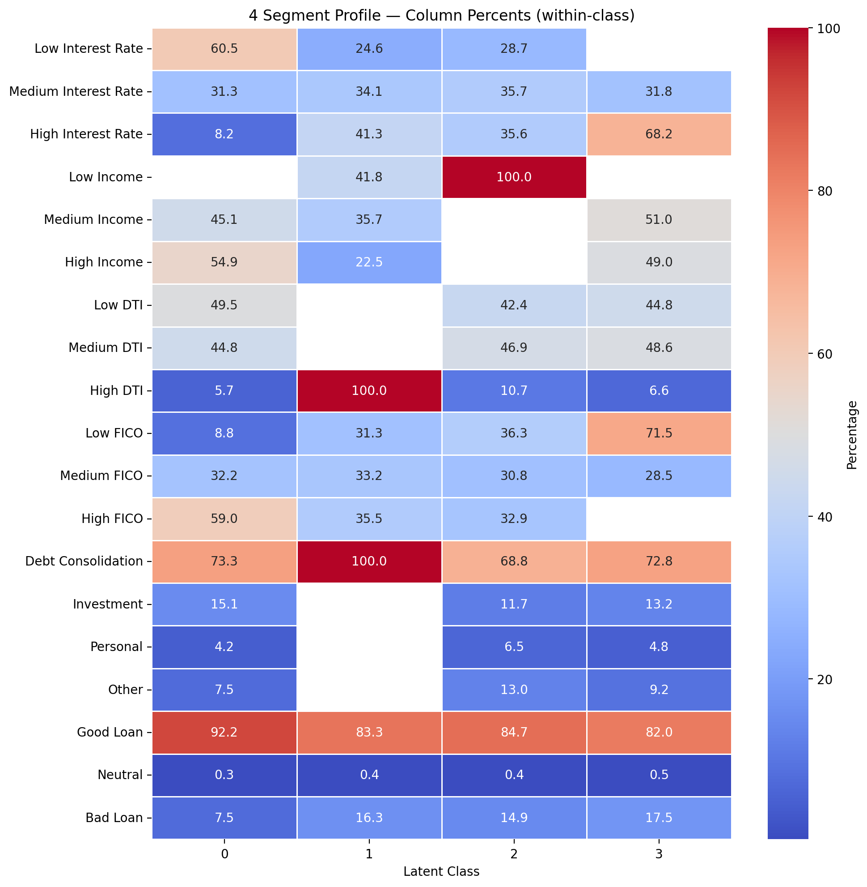

Your PD Model Tells You Who's Risky.
LCA Tells You Why.
Latent Class Analysis finds hidden borrower segments in your portfolio: distinct risk profiles that a single probability score can't see. Here's how to run it in Python.
What a PD Score Can't Tell You
In credit risk, the default question for any borrower is "what's their probability of default?" A scorecard or gradient-boosted model gives you a number, you set a cutoff, and you make a decision. That paradigm has been dominant for decades, and for good reason. It works.
But it leaves a critical question unanswered: what kind of borrower is risky?
A PD of 17% can come from a credit-damaged borrower paying punitive rates, or from a heavily-indebted borrower whose FICO still looks fine on paper. Same risk number. Completely different stories, and probably different appropriate responses from a pricing, collections, or product perspective.
What Is Latent Class Analysis?
Latent Class Analysis is a statistical technique that finds hidden subgroups in data based on patterns across multiple variables at once. It has been a workhorse in market research for decades, segmenting consumers by buying behavior, attitudes, or product preferences, but it is rarely applied to credit risk.
Where a PD model asks "how risky is this borrower?", LCA asks a different question: "what kinds of borrowers exist in my portfolio, and how do they differ?"
The output is a small number of distinct profiles, each defined by a combination of attributes rather than a single score. In this tutorial we implement LCA using a Gaussian Mixture Model (GMM) on discretized features. We tested class solutions from two through six and retained four classes for interpretability. AIC and BIC continued to improve beyond four, so the choice reflects a deliberate tradeoff rather than a statistically optimal stopping point.
Imports
import warnings
warnings.filterwarnings('ignore')
import pandas as pd
import numpy as np
import matplotlib.pyplot as plt
import seaborn as sns
from sklearn.preprocessing import LabelEncoder, KBinsDiscretizer
from sklearn.mixture import GaussianMixture
print("✅ Libraries loaded")Load, Clean & Discretize
We select five borrower attributes, simplify categorical variables, and discretize continuous features into three quantile bins (Low / Medium / High). Loan status is encoded separately and held out of the clustering. It is used only after the fact to validate segments.
DATA_PATH = "lendingclub_sample_25000.csv"
OUTPUT_DIR = "."
df_raw = pd.read_csv(DATA_PATH, low_memory=False)
# Customer ID for traceability
if 'id' in df_raw.columns:
df_raw['customer_id'] = df_raw['id']
elif 'member_id' in df_raw.columns:
df_raw['customer_id'] = df_raw['member_id']
else:
df_raw['customer_id'] = df_raw.index
# Select and clean columns
cols = ['customer_id', 'int_rate', 'annual_inc', 'dti',
'fico_range_high', 'purpose', 'loan_status']
df = df_raw[cols].dropna()
# Simplify loan purpose into 4 groups
purpose_mapping = {
'debt_consolidation': 'Debt', 'credit_card': 'Debt',
'home_improvement': 'Investment', 'major_purchase': 'Investment',
'small_business': 'Investment', 'car': 'Personal',
'vacation': 'Personal', 'wedding': 'Personal',
'moving': 'Personal', 'medical': 'Personal',
'other': 'Other', 'house': 'Other',
'renewable_energy': 'Other', 'educational': 'Other'
}
df['purpose'] = df['purpose'].map(purpose_mapping)
df = df[df['purpose'].notna()]
# Consolidate loan_status into Good / Bad / Neutral
status_map = {
'Fully Paid': 'Good', 'Current': 'Good',
'Charged Off': 'Bad', 'Default': 'Bad',
'Late (16-30 days)': 'Bad', 'Late (31-120 days)': 'Bad',
'In Grace Period': 'Neutral','Issued': 'Neutral'
}
df['loan_status'] = df['loan_status'].map(status_map)
df = df[df['loan_status'].notna()]
# Encode categoricals (alphabetical order — remember the mapping!)
# purpose: Debt=0, Investment=1, Other=2, Personal=3
# loan_status: Bad=0, Good=1, Neutral=2
df['purpose'] = LabelEncoder().fit_transform(df['purpose'])
df['loan_status'] = LabelEncoder().fit_transform(df['loan_status'])
# Discretize continuous features into 3 quantile bins
# bin 0 = Low, bin 1 = Medium, bin 2 = High
continuous_cols = ['int_rate', 'annual_inc', 'dti', 'fico_range_high']
discretizer = KBinsDiscretizer(n_bins=3, encode='ordinal', strategy='quantile')
df[continuous_cols] = discretizer.fit_transform(df[continuous_cols])
print(f"Final dataset: {len(df):,} rows")LabelEncoder assigns codes alphabetically. Debt=0, Investment=1, Other=2, Personal=3. Keep this mapping in mind when interpreting the heatmap columns later.
Fit the Gaussian Mixture Model
We use a Gaussian Mixture Model as our LCA estimator, fit on four latent classes. Class numbering is stabilized by segment size (the largest segment becomes Class 0) so results are reproducible across runs.
# Features for clustering — hold out loan_status and customer_id
X = df.drop(columns=['loan_status', 'customer_id'])
# Fit GMM with 4 latent classes
gmm = GaussianMixture(n_components=4, random_state=42)
raw_classes = gmm.fit_predict(X)
# Stabilize class numbering: largest segment → Class 0
order = pd.Series(raw_classes).value_counts().index.tolist()
remap = {old: new for new, old in enumerate(order)}
df['latent_class'] = pd.Series(raw_classes, index=df.index).map(remap)
print("Class sizes (after re-numbering):")
print(df['latent_class'].value_counts().sort_index())
# Export full dataset and per-class files
df.to_csv(f"{OUTPUT_DIR}/lendingclub_with_latent_classes.csv", index=False)
for class_id in sorted(df['latent_class'].unique()):
class_df = df[df['latent_class'] == class_id]
class_df.to_csv(f"{OUTPUT_DIR}/latent_class_{class_id}_customers.csv", index=False)Build the Within-Class Profile Table
We compute within-class proportions for every attribute level: what percentage of borrowers in each class have Low/Medium/High interest rates, income, DTI, and FICO. This becomes the data behind the heatmap.
summary = (
df.drop(columns=['customer_id'])
.groupby('latent_class')
.agg(lambda x: x.value_counts(normalize=True).to_dict())
)
expanded_summary = {}
for col in summary.columns:
temp_df = pd.DataFrame(summary[col].tolist(), index=summary.index)
temp_df.columns = [f"{col}_{str(c)}" for c in temp_df.columns]
expanded_summary.update(temp_df.to_dict(orient="series"))
summary_df = pd.DataFrame(expanded_summary)
col_percent = (summary_df * 100).round(1)
col_percent.to_csv(f"{OUTPUT_DIR}/latent_class_summary_4class_column_percents.csv")
# Human-readable labels
# Continuous (quantile bins): 0=Low, 1=Medium, 2=High
# purpose (alphabetical): 0=Debt, 1=Investment, 2=Other, 3=Personal
# loan_status (alphabetical): 0=Bad, 1=Good, 2=Neutral
label_map = {
'int_rate_0.0': 'Low Interest Rate',
'int_rate_1.0': 'Medium Interest Rate',
'int_rate_2.0': 'High Interest Rate',
'annual_inc_0.0': 'Low Income',
'annual_inc_1.0': 'Medium Income',
'annual_inc_2.0': 'High Income',
'dti_0.0': 'Low DTI',
'dti_1.0': 'Medium DTI',
'dti_2.0': 'High DTI',
'fico_range_high_0.0': 'Low FICO',
'fico_range_high_1.0': 'Medium FICO',
'fico_range_high_2.0': 'High FICO',
'purpose_0': 'Debt Consolidation',
'purpose_1': 'Investment',
'purpose_2': 'Other',
'purpose_3': 'Personal',
'loan_status_0': 'Bad Loan',
'loan_status_1': 'Good Loan',
'loan_status_2': 'Neutral'
}
row_order = [
'Low Interest Rate', 'Medium Interest Rate', 'High Interest Rate',
'Low Income', 'Medium Income', 'High Income',
'Low DTI', 'Medium DTI', 'High DTI',
'Low FICO', 'Medium FICO', 'High FICO',
'Debt Consolidation', 'Investment', 'Personal', 'Other',
'Good Loan', 'Neutral', 'Bad Loan'
]
col_percent_labeled = col_percent.T.copy()
col_percent_labeled.index = [label_map.get(lbl, lbl) for lbl in col_percent_labeled.index]
col_percent_labeled = col_percent_labeled.reindex(
[r for r in row_order if r in col_percent_labeled.index])The Profile Heatmap
The heatmap is the key deliverable. Each column is one segment; each row is one attribute level. Red cells show where attributes concentrate within a class, blue where they are scarce. The pattern of reds tells the story of each borrower type.
# Column-percent heatmap (within-class profile)
plt.figure(figsize=(10, 10))
sns.heatmap(
col_percent_labeled,
annot=True, fmt=".1f",
cmap="coolwarm", linewidths=.5,
cbar_kws={'label': 'Percentage (within class)'}
)
plt.title("4-Segment Borrower Profile — Column Percents (within class)")
plt.xlabel("Latent Class")
plt.tight_layout()
plt.savefig(f"{OUTPUT_DIR}/lca_heatmap.png", dpi=200, bbox_inches='tight')
plt.show()
# Row-percent heatmap (across classes)
# "Of all borrowers with High DTI, what % are in each class?"
row_percent = summary_df.T
row_percent = row_percent.div(row_percent.sum(axis=1), axis=0) * 100
row_percent = row_percent.round(1)
row_percent_labeled = row_percent.copy()
row_percent_labeled.index = [label_map.get(lbl, lbl) for lbl in row_percent_labeled.index]
row_percent_labeled = row_percent_labeled.reindex(
[r for r in row_order if r in row_percent_labeled.index])
plt.figure(figsize=(10, 10))
sns.heatmap(row_percent_labeled, annot=True, fmt=".1f",
cmap="coolwarm", linewidths=.5,
cbar_kws={'label': 'Percentage (across classes)'})
plt.title("4-Segment Profile — Row Percents (across classes)")
plt.xlabel("Latent Class")
plt.tight_layout()
plt.show()
Figure: Column-percent heatmap from the 4-class GMM solution on 25,000 LendingClub loans. Each column is one segment; red cells show where attributes concentrate within a class. Class 0 stacks favorable attributes across every dimension. Class 1 is defined entirely by High DTI and Debt Consolidation purpose. Class 3 concentrates Low FICO and High Interest Rate despite acceptable income and DTI.
Choosing the Number of Classes: AIC, BIC & Entropy
How do you know four classes is the right number? We fit models from 2 to 6 classes and compare AIC, BIC, and classification entropy. Lower AIC/BIC is better; lower entropy means cleaner class separation.
metrics = []
for n_classes in range(2, 7):
g = GaussianMixture(n_components=n_classes, random_state=42)
g.fit(X)
probs = g.predict_proba(X)
entropy = -np.sum(probs * np.log(probs + 1e-10), axis=1).mean()
metrics.append({
"Classes": n_classes,
"AIC": g.aic(X),
"BIC": g.bic(X),
"Entropy": entropy
})
metrics_df = pd.DataFrame(metrics)
metrics_df.to_csv(f"{OUTPUT_DIR}/lca_model_metrics.csv", index=False)
print(metrics_df.to_string(index=False))
# AIC & BIC plot
plt.figure(figsize=(10, 5))
plt.plot(metrics_df["Classes"], metrics_df["AIC"], marker='o', label="AIC", color='orange')
plt.plot(metrics_df["Classes"], metrics_df["BIC"], marker='o', label="BIC", color='red')
plt.xlabel("Number of Classes")
plt.ylabel("Information Criterion")
plt.title("AIC and BIC Across Class Solutions")
plt.legend()
plt.grid(True)
plt.tight_layout()
plt.show()
# Entropy plot
plt.figure(figsize=(10, 5))
plt.plot(metrics_df["Classes"], metrics_df["Entropy"], marker='o', color='green')
plt.xlabel("Number of Classes")
plt.ylabel("Entropy")
plt.title("Classification Entropy Across Class Solutions")
plt.grid(True)
plt.tight_layout()
plt.show()What the Four Classes Tell Us
The segmentation surfaces four distinct borrower profiles. Bad loans don't share a common profile: there are two genuinely distinct failure modes, each requiring a different response.
- 59% High FICO
- 60.5% Low Interest Rate
- 49.5% Low DTI
- 55% High Income · 0% Low Income
- 71.5% Low FICO
- 68.2% High Interest Rate
- 49% High Income
- 93% Low or Medium DTI
- 100% High DTI
- 100% Debt Consolidation purpose
- FICO mixed across all three bins
- Defined mainly by lower income
- FICO and DTI similar to Prime class
- More diffuse profile
Browse all tutorials in Resources.
Back to Resources →